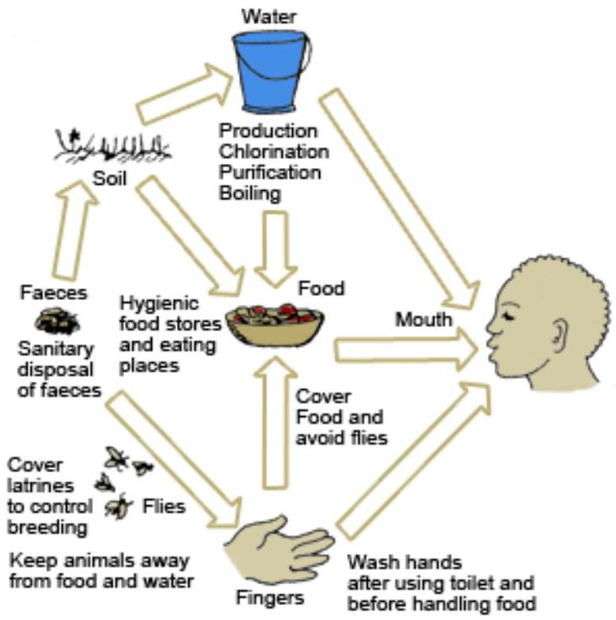
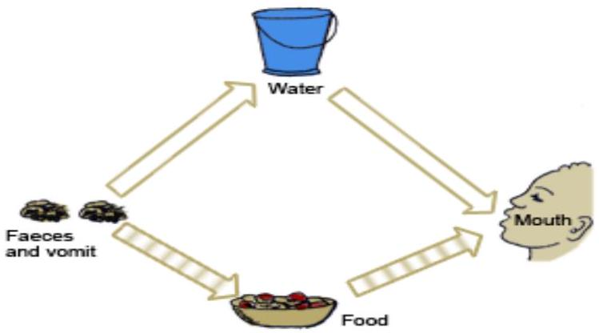
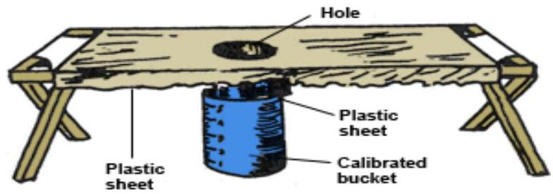

SECTION 5: DISEASES CAUSED BY FAECAL-ORAL CONTAMINATION
Introduction
Diseases caused by faecal-oral contamination are those whose causative organisms are excreted in the stool of an infected person and then, by various ways, enter the mouth of a susceptible person. Water that looks clean to the eye may be dangerously polluted. Contaminated food may look, smell and taste delicious and yet harbour dangerous organisms. Food and water transmits diseases if contaminated by infected hands, soil, flies, animals, animal products or polluted water. Flies transmit diseases by vomiting on food or by carrying pathogens from faeces and transferring them to food. Indeed, most of the primary diarrhoeal diseases are caused by direct contamination of food or water by faeces, through flies and fingers.
Objectives
By the end of this section you will be able to:
- List eight common diseases spread by the faecal-oral route
- Describe the methods used to interrupt the transmission cycle of faecal-oral transmitted diseases
- Describe the clinical features, of faecal-oral route transmitted diseases
- Describe the management of faecal-oral route transmitted diseases.
Now move on to look at the diseases one by one starting with enteric fevers.
Enteric Fevers
Enteric fevers include typhoid fever and paratyphoid A and B fevers. Typhoid fever is an infectious disease characterised by high continuous fever, malaise and involvement of lymphoid tissue and spleen. Diarrhoea is not a common symptom in typhoid fever.
Paratyphoid fever may present like typhoid fever, but in most cases it presents as gastroenteritis or transient diarrhoea. Both are mainly spread by the faecal-oral route through contaminated food, water and milk. Flies are also important in the transmission of enteric fevers.
You will now consider each type of disease in turn.
Typhoid Fever
This is an infectious bacterial disease caused by salmonella typhi.
Typhoid fever is endemic in many regions of East Africa, although epidemic outbreaks have occurred when a source of water or food used by many people has been contaminated.
The disease has a case fatality rate of $3\%$ with treatment and $10\%$ without adequate antibiotic treatment. Human beings are the only known reservoir and host.
Clinical Features
The incubation period of typhoid fever is 7-21 days. The disease has a gradual onset which progresses through the following four stages.
First Week
During the first week and early in the disease, the patient has severe headache, malaise, loss of appetite, body pains and aches and a tendency to nose-bleed.
The body temperature rises day by day or in steps to $39.5^{\circ}\text{C}$ or higher. Most patients cough because they develop bronchitis and may also complain of constipation.
Second Week
In the second week, temperature continues to rise, but the pulse rate is slower than would be expected for that temperature. There is swelling of lymphoid tissue in the intestines as well as Peyer's patches, necrosis and ulcers, which cause the abdomen to become distended and tender.
The high temperature and toxaemia causes mental confusion and disorientation in the patient. Half the patients may develop greenish watery ('pea-soup') diarrhoea and broncho-pneumonia.
Third Week
Body temperature decreases step by step and the patient improves slowly. If there is no improvement, the Peyer's patches in the intestines perforate and toxaemia increases.
The patient becomes delirious and incontinent of urine and stool, muscles twitch and coma may precede death.
Fourth Week
For the patients who do not suffer the serious complications of the third week, the fourth week is a period of convalescence.
The temperature drops back to normal and the patient recovers gradually.
Diagnosis
The best way to diagnose typhoid fever is through a blood culture. This may be positive during the first week and for a variable period after this. Stool and urine cultures can also be made although they are only positive after the first week. Other tests which are undertaken include:
- Widal test during the first and second week, that is indicative of high and rising titres
- WBC count which indicates low levels (leucopenia) with raised lymphocyte count
- Stool to check for presence of occult blood which is found in 100\% of the cases
How reliable is the Widal test in typhoid diagnosis?
Although the Widal test is still very useful, especially when two tests are performed four to five days apart after the end of the first week, its interpretation is full of difficulties especially in endemic areas and in people who have had the typhoid vaccine. That is why it is a good idea to also carry out one of the other laboratory tests.
Treatment
The treatment of typhoid fever includes the following:
- Fluid replacement due to diarrhoea
- Oral norfloxacin 400 mg 12 hourly for 10-14 days
- Oral ciproxacin 500 mg bd. for 14 days
- Oral corticosteroids to prevent Jarisch-Herxheimer's reaction
- Patient should be isolated in fly-proof room
- Contaminated articles should be disposed by incineration
- Stools and urine should be disposed of in a pit latrine or septic tank
- Surgical treatment for perforated bowels
Note:
When treatment is started early it is not usually necessary to refer typhoid patients.
Prevention and Control
The prevention and control of typhoid fever is similar to that of many diarrhoea diseases. It includes:
- Identification of the carriers especially those who work as food handlers and treat them promptly
- Administration of typhoid vaccine
- Safe water supply
- Improvement in food hygiene
Paratyphoid Fever
This is the second type of enteric fever which was mentioned earlier. It is caused by bacteria known as salmonella paratyphi types A, B and C . The disease runs a milder course than typhoid fever and also has enlargement of the spleen, bloodstained diarrhoea and swelling of the Peyer's patches.
Treatment
The treatment of paratyphoid fever is as follows:
- Intravenous fluid if diarrhoea is severe
- Oral rehydration if diarrhoea is mild
- Oral contrimoxazole two tablets bd. for five to seven days
Prevention and Control
The prevention and control measures are similar to those that were covered under typhoid fever.
Cholera
Cholera is an intestinal disease which is characterised by sudden onset of profuse watery stools and vomiting, leading to severe dehydration, acidosis and circulatory collapse.
Epidemiology of Cholera
It is caused by a small comma-shaped motile organism called vibrio cholerae. There are about four substrains of the cholera vibrio, namely, El Tor, Ogawa, Luaba and Hikojima. The El Tor sub-strain causes cholera epidemics in East Africa.
Cholera is transmitted through the faecal-oral route, mostly by water which has been contaminated with faecal matter. The vibrios are very sensitive to the hydrochloric acid found in the human stomach, and so a large number of organisms must be ingested for infection to occur.
Cholera occurs in all parts of the world where the living conditions are unsanitary.
The human being is the reservoir and host. Vibrios prefer brackish (salty) water. In seawater, the organisms can live even longer multiplying in crabs and shrimps. Vibrios also multiply in certain foods such as milk and boiled rice.
What is the role and importance of carriers?
The reservoir of infection in cholera is formed mainly by the carriers. For every clinical case of cholera there may be 50-100 asymptomatic carriers. Although the carriers excrete a smaller number of vibrios than the patients, they form the greatest danger to the community because of their sheer number and freedom of movement.
Clinical Features
Cholera has a short incubation period of two to three days. The vibrios remain in the digestive tract from where they cause water loss and electrolyte imbalance.
What signs and symptoms would lead you to suspect cholera?
Unlike typhoid, cholera is not a systemic infection and therefore fever is generally low or absent. Cholera progresses through the following three stages.
First Stage
This stage lasts for 3-12 hours. During this stage profuse watery stool is passed by the patient until faecal matter disappears. The stool becomes almost clear fluid with flakes of mucus, giving it the classical rice-water stool appearance. Vomiting follows diarrhoea. Initially the patient vomits food but soon after only clear fluid or rice-water is vomited. The patient develops severe cramps in the abdomen and limbs due to electrolyte loss.
Second Stage
The patient becomes severely dehydrated, the skin is cold, dry and inelastic. Blood pressure drops severely, and it may not be recordable. The pulse becomes weak and rapid, urine production ceases, patient collapses and may go into irreversible shock.
Third Stage
This is the stage of recovery. Some patients recover spontaneously or with treatment. The general condition rapidly improves, diarrhoea becomes less profuse and the patient is able to take oral fluids.
Diagnosis
Cholera should be suspected in any outbreak of diarrhoeal diseases. The diagnosis is made on clinical grounds and also through laboratory isolation of vibrio cholerae from a rectal swab, stool or vomitus specimen.
Management
The management of cholera is easily done at health centre level and so there is no need to refer patients to hospital. This is because the main cause of death in cholera patients is dehydration. This can occur very quickly and early in an outbreak before the urgency of treatment is recognised. Therefore early rehydration is the most important part of management.
Other measures taken in the management of cholera include the following:
- The immediate notification of district medical officer. Cholera is an internationally notifiable disease.
- Admission of patients in temporary treatment centres, such as school or church and the treatment of patients on 'cholera beds', that is beds with a central hole through which the stools can pass into a bucket and measured.
- Barrier nursing and patient isolation should be practiced to prevent spread of the disease.
- Disinfection of hospital equipment and proper disposal of stool and vomitus into a pit latrine or septic tanks.
Now move on to see more measures that are taken in the management of cholera.
Measures taken in the management of cholera also include the following:
- Immediate introduction of intravenous fluids to correct the severe fluid and electrolyte loss. If this is started in time it can save many cholera cases. As soon as a patient is able to drink, Oral Rehydration Solution (ORS) should be given in water at a rate of $200-300 \text{ ml}$ per hour.
- Intravenous fluids for patients who are in shock or too weak to drink.
- Oral tetracycline, 500 mg six hourly for five days. This speeds up recovery and prevents convalescent carrier state.
- Oral cotrimoxazole, two tablets 12 hourly for three days can also be used effectively.
Remember:
Rehydration will save almost all cholera cases.
Prevention and Control
The following measures are useful in the prevention and control of cholera.
- Surveillance: early detection is central to the success of cholera control because it enables immediate action to be taken as soon as there is an outbreak of the disease. Surveillance leads to immediate notification of an outbreak.
- Provision of clean safe water to the community can easily control cholera because it is mainly a water borne disease.
- Teaching and demonstrating to members of the community cheap and effective methods of purifying water at their home.
- Foods which can transmit cholera such as milk, should be pasteurised or boiled; raw or uncooked food should be avoided or washed in safe water, foods should be protected from flies and markets inspected.
Now move on to see more measures that are useful in the prevention and control of cholera.
Measures that are useful in the prevention and control of cholera also include.
- Encouraging the digging and use of pit latrines.
- Provision of chemoprophylaxis to all contacts of the patients including family, friends and visitors using oral tetracycline.
- Administering cholera vaccine to health care workers in contact with the patients during the epidemics.
- Enrolling the assistance of formal and informal community leaders to address negative cultures and customs that contribute to the spread of cholera. Such communities should be targeted with information, education and communication messages.
Remember:
Cholera is an internationally notifiable disease.